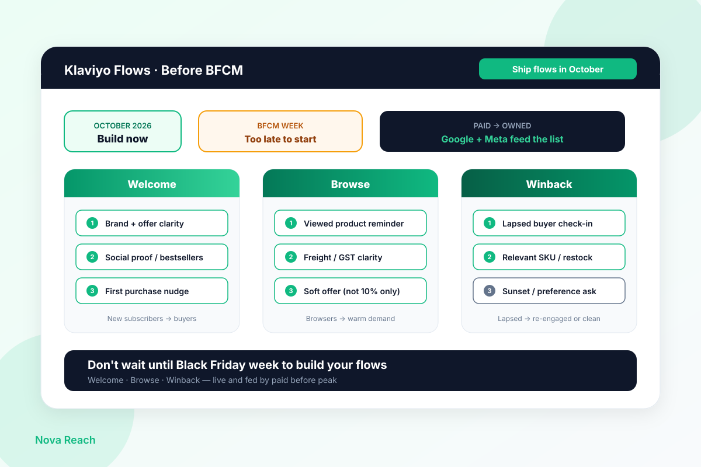

Every Black Friday week I see the same scramble from NZ and AU Shopify brands: open Klaviyo on Monday, drag a welcome series together by Wednesday, paste last year’s 10% code into browse abandon, and hope winback somehow “just works” while Meta and Google are already eating the budget.
That is not lifecycle strategy. It is building the engine while the race is already underway. Peak week is when you need flows that have already been tested, segmented, and fed by paid traffic — not when you start writing subject lines.
I run full-funnel ecommerce from Christchurch — SEO, Google Ads, Meta, CRO, Klaviyo. This is the October conversation I have before anyone treats email as a Black Friday afterthought.
Why last-minute flow builds fail
Flows shipped the week of BFCM usually fail for boring, predictable reasons:
- Thin segments. Welcome and browse flows need volume and history to show what converts. A flow you turn on Tuesday has no October performance data to lean on when Thursday’s auction spikes.
- Untested copy and timing. First-send typos, broken PDPs, and “wait 1 hour” delays you never validated land in front of your highest-intent traffic of the year.
- Offer and ops mismatches. Freight and GST surprises still kill recoveries — we covered that in the abandon-cart freight post. Do not paper over checkout friction with a blanket code inside a brand-new flow.
- Paid with nowhere to land. If Google and Meta are driving list growth into empty or draft flows, you are renting clicks with no owned follow-up.
You did not save time by waiting. You deferred the build into the week when you have the least attention and the most expensive traffic.
💡 Pro Tip
In Klaviyo, filter flow performance for the last 30–60 days in NZD/AUD. If welcome or browse revenue is near zero while paid list growth is real, the gap is the flow — not the acquisition channel.
The three flows to ship in October
You do not need twenty automations before peak. You need three that are live, measured, and fed by paid.
1. Welcome. New subscribers should meet the brand, the bestsellers, and a clear first-purchase path — not a single coupon email. Clarity on shipping zones, GST, and what you sell beats a lazy 10% for most NZ/AU stores. Welcome is also where paid list growth becomes equity: every Meta lead form or Google-driven popup becomes a sequence, not a one-off blast.
2. Browse abandon. Viewed-product reminders recover intent that never reached cart. Lead with the product, freight honesty, and social proof before you reach for a discount. October is when you tune delays and exclusions (recent buyers, active cart abandoners) so BFCM week is not your first live test.
3. Winback / sunset. Lapsed buyers and cold profiles need a short re-engagement path — relevant SKUs, restocks, preference asks — then a clean sunset so you are not paying to email dead weight into peak. A tighter list lifts deliverability and MER when campaign volume ramps in November.
Together these three support paid: prospecting fills welcome, site traffic fills browse, and a cleaned list makes November campaigns cheaper to deliver and easier to convert.
💡 Pro Tip
Map one paid path into each flow this month: Meta/Google → popup or thank-you capture → welcome; product-view pixel → browse; 90–180 day lapsed buyers → winback. If the path is missing, fix capture before you scale spend.
A practical NZ/AU October checklist
Build like an operator, not a template shopper:
- Timing. Welcome: 3–5 emails over 7–14 days. Browse: first email within a few hours of view (not days). Winback: start after your true repurchase cycle, not a generic 30-day rule copied from a US brand.
- Offer clarity without blanket 10%. Prefer free shipping thresholds, bundles, gift-with-purchase, or early access — and only discount when margin and freight math still work in NZD/AUD.
- Test sends. Preview on mobile, click every PDP and checkout link, send to a seed list, and check spam placement before you call a flow “live.”
- List growth from paid. Confirm forms, thank-you pages, and post-purchase capture are writing to the right lists and triggering the right flows. Paid that never lands in owned is rent with no follow-up.
- Exclusions. Keep cart abandon, browse, and welcome from colliding. Recent purchasers should not get a winback for a product they just bought.
If freight and GST on the PDP still surprise shoppers, fix that first — email cannot recover what checkout breaks.
What “ready” looks like by late October
You are on track when, before early November:
- Welcome, browse, and winback/sunset are live — not draft — with at least a few weeks of real sends.
- You can name revenue or conversion contribution from welcome and browse in NZD/AUD, even if modest.
- Paid campaigns have a clear path into list growth that triggers welcome.
- Offers, freight copy, and PDP links match what ads and the site promise.
- You are not planning to “build email in BFCM week” as the plan.
If those boxes are empty, more November campaign volume will not invent the automations. It will only blast a colder list harder.
An October checklist (before BFCM week)
- Ship or repair Welcome, Browse abandon, and Winback/sunset — live, not draft.
- Connect paid list growth into Welcome; confirm browse is firing on product views.
- Lead with offer clarity and freight honesty; do not rely on a blanket 10% code.
- Run test sends and mobile link checks before you scale campaign volume.
- Clean exclusions so flows do not stack on the same shopper the same day.
- Measure early flow contribution in NZD/AUD so you know what to protect in November.
Ship the flows in October or scramble in Black Friday week. Peak rewards the stores that already own the follow-up — not the ones still building it.
If you want a second set of eyes on your Klaviyo flows, how paid feeds the list, and what to ship before peak — request a free store audit. I look at flow status and capture paths myself and tell you the three lifecycle moves I’d make first.
Ship Welcome, Browse, and Winback in October — before Black Friday week becomes a build week.
Send a Loom of your Klaviyo flows (or a screenshot of live vs draft). I’ll reply within one business day (Christchurch time) with the three flow moves I’d make before peak.
Get a free store audit